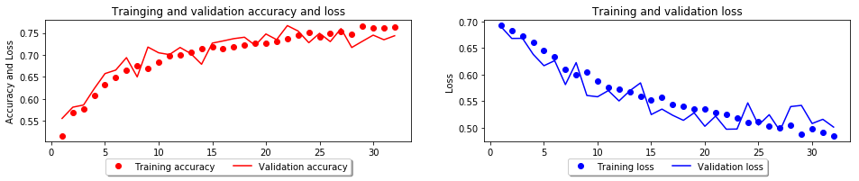
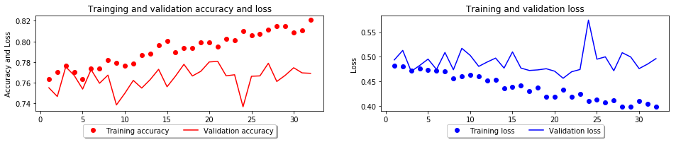
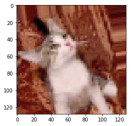

<!DOCTYPE html>
<html>
<head><meta name="generator" content="Hexo 3.8.0">
  <meta charset="utf-8">
  
  <title>딥러닝으로 개와 고양이를 분류하는 모델을 만들어 보자. | CodingCrew</title>
  <meta name="viewport" content="width=device-width, initial-scale=1, maximum-scale=1">
  
  <meta name="keywords" content="MLKeras딥러닝으로 시리즈CNN">
  
  
    <meta name="google-site-verification" content="2YVImY1fo1thQTx-sHmMQhhE7x9aoPG7F593q2qt734">
  
  
  
  
    <meta name="naver-site-verification" content="6e851ae0213de51257ab8801ac88ee25b5581313">
  
  <meta name="description" content="개와 고양이 분류하기이번에는 CNN(Convolutional Neural Network)를 이용하여 개와 고양이 사진을 분류하는 모델을 만들어 봅시다.   사람은 개와 고양이를 분류하기가 굉장히 쉽죠. 딱 보면 아니까요.하지만 컴퓨터 공학에서는 이걸 분류하는 문제가 해결하기 굉장히 어려운 문제였습니다.컴퓨터는 일일히 룰을 지정해가며 개와 고양이를 분류하도록">
<meta name="keywords" content="ML,Keras,딥러닝으로 시리즈,CNN">
<meta property="og:type" content="article">
<meta property="og:title" content="딥러닝으로 개와 고양이를 분류하는 모델을 만들어 보자.">
<meta property="og:url" content="https://codingcrews.github.io/2019/01/17/cat-dog/index.html">
<meta property="og:site_name" content="CodingCrew">
<meta property="og:description" content="개와 고양이 분류하기이번에는 CNN(Convolutional Neural Network)를 이용하여 개와 고양이 사진을 분류하는 모델을 만들어 봅시다.   사람은 개와 고양이를 분류하기가 굉장히 쉽죠. 딱 보면 아니까요.하지만 컴퓨터 공학에서는 이걸 분류하는 문제가 해결하기 굉장히 어려운 문제였습니다.컴퓨터는 일일히 룰을 지정해가며 개와 고양이를 분류하도록">
<meta property="og:locale" content="ko">
<meta property="og:image" content="https://codingcrews.github.io/2019/01/17/cat-dog/cat-dog_13_0.png">
<meta property="og:image" content="https://codingcrews.github.io/2019/01/17/cat-dog/cat-dog_19_0.png">
<meta property="og:image" content="https://codingcrews.github.io/2019/01/17/cat-dog/cat-dog_25_1.png">
<meta property="og:updated_time" content="2019-01-29T18:39:15.398Z">
<meta name="twitter:card" content="summary">
<meta name="twitter:title" content="딥러닝으로 개와 고양이를 분류하는 모델을 만들어 보자.">
<meta name="twitter:description" content="개와 고양이 분류하기이번에는 CNN(Convolutional Neural Network)를 이용하여 개와 고양이 사진을 분류하는 모델을 만들어 봅시다.   사람은 개와 고양이를 분류하기가 굉장히 쉽죠. 딱 보면 아니까요.하지만 컴퓨터 공학에서는 이걸 분류하는 문제가 해결하기 굉장히 어려운 문제였습니다.컴퓨터는 일일히 룰을 지정해가며 개와 고양이를 분류하도록">
<meta name="twitter:image" content="https://codingcrews.github.io/2019/01/17/cat-dog/cat-dog_13_0.png">
  
    <link rel="alternate" href="/atom.xml" title="CodingCrew" type="application/atom+xml">
  

  

  <link rel="icon" href="/css/images/logo.png">
  <link rel="apple-touch-icon" href="/css/images/logo.png">
  
    <link href="//fonts.googleapis.com/css?family=Source+Code+Pro" rel="stylesheet" type="text/css">
  
  <link href="https://fonts.googleapis.com/css?family=Open+Sans|Montserrat:700" rel="stylesheet" type="text/css">
  <link href="https://fonts.googleapis.com/css?family=Roboto:400,300,300italic,400italic" rel="stylesheet" type="text/css">

  <!-- <link href="//cdn.bootcss.com/font-awesome/4.6.3/css/font-awesome.min.css" rel="stylesheet"> -->
  <!-- CDN 교체 -->
  <link href="/css/font-awesome.min.css" rel="stylesheet">

  <style type="text/css">
    /* @font-face{font-family:futura-pt;src:url(https://use.typekit.net/af/9749f0/00000000000000000001008f/27/l?subset_id=2&fvd=n5) format("woff2");font-weight:500;font-style:normal;} */
    /* @font-face{font-family:futura-pt;src:url(https://use.typekit.net/af/90cf9f/000000000000000000010091/27/l?subset_id=2&fvd=n7) format("woff2");font-weight:500;font-style:normal;} */
    /* @font-face{font-family:futura-pt;src:url(https://use.typekit.net/af/8a5494/000000000000000000013365/27/l?subset_id=2&fvd=n4) format("woff2");font-weight:lighter;font-style:normal;} */
    /* @font-face{font-family:futura-pt;src:url(https://use.typekit.net/af/d337d8/000000000000000000010095/27/l?subset_id=2&fvd=i4) format("woff2");font-weight:400;font-style:italic;} */
  </style>
  <link rel="stylesheet" href="/css/style.css">

  <script src="/js/jquery-3.1.1.min.js"></script>
  <script src="/js/bootstrap.js"></script>

  <!-- Bootstrap core CSS -->
  <link rel="stylesheet" href="/css/bootstrap.css">

  
    <link rel="stylesheet" href="/css/dialog.css">
  

  

  
    <link rel="stylesheet" href="/css/header-post.css">
  

  

  

</head>
</html>


  <body data-spy="scroll" data-target="#toc" data-offset="50">


  
  <div id="container">
    <div id="wrap">
      
        <header>

    <div id="allheader" class="navbar navbar-default navbar-static-top" role="navigation">
        <div class="navbar-inner">
          
          <div class="container"> 
            <button type="button" class="navbar-toggle" data-toggle="collapse" data-target=".navbar-collapse">
              <span class="sr-only">Toggle navigation</span>
              <span class="icon-bar"></span>
              <span class="icon-bar"></span>
              <span class="icon-bar"></span>
            </button>

            
              <a class="brand" style="
                 margin-top: 0px;" href="#" data-toggle="modal" data-target="#myModal">
                  
              </a>
            
            
            <div class="navbar-collapse collapse">
              <ul class="hnav navbar-nav">
                
                  <li> <a class="main-nav-link" href="/">Home</a> </li>
                
                  <li> <a class="main-nav-link" href="/study">study</a> </li>
                
                  <li> <a class="main-nav-link" href="/archives">Archives</a> </li>
                
                  <li> <a class="main-nav-link" href="/categories">Categories</a> </li>
                
                  <li> <a class="main-nav-link" href="/tags">Tags</a> </li>
                
                  <li> <a class="main-nav-link" href="/about">About</a> </li>
                
                  <li><div id="search-form-wrap">

    <form class="search-form">
        <input type="text" class="ins-search-input search-form-input" placeholder="">
        <button type="submit" class="search-form-submit"></button>
    </form>
    <div class="ins-search">
    <div class="ins-search-mask"></div>
    <div class="ins-search-container">
        <div class="ins-input-wrapper">
            <input type="text" class="ins-search-input" placeholder="Type something...">
            <span class="ins-close ins-selectable"><i class="fa fa-times-circle"></i></span>
        </div>
        <div class="ins-section-wrapper">
            <div class="ins-section-container"></div>
        </div>
    </div>
</div>
<script>
(function (window) {
    var INSIGHT_CONFIG = {
        TRANSLATION: {
            POSTS: 'Posts',
            PAGES: 'Pages',
            CATEGORIES: 'Categories',
            TAGS: 'Tags',
            UNTITLED: '(Untitled)',
        },
        ROOT_URL: '/',
        CONTENT_URL: '/content.json',
    };
    window.INSIGHT_CONFIG = INSIGHT_CONFIG;
})(window);
</script>
<script src="/js/insight.js"></script>

</div></li>
            </ul></div>
          </div>
                
      </div>
    </div>

</header>


      
            
      <div id="content" class="outer">
        
          <section id="main" style="float:none;"><article id="post-cat-dog" style="width: 75%; float:left;" class="article article-type-post" itemscope="" itemprop="blogPost">
  <div id="articleInner" class="article-inner">
    
    
      <header class="article-header">
        
  
    <h1 class="thumb" itemprop="name">
      딥러닝으로 개와 고양이를 분류하는 모델을 만들어 보자.
    </h1>
  

      </header>
    
    <div class="article-meta">
      
	<a href="/2019/01/17/cat-dog/" class="article-date">
	  <time datetime="2019-01-17T14:25:11.000Z" itemprop="datePublished">2019-01-17</time>
	</a>

      
    <a class="article-category-link" href="/categories/ml/">ML</a>

      
	<a class="article-views">
	<span id="busuanzi_container_page_pv">
		PV:<span id="busuanzi_value_page_pv"></span>
	</span>
	</a>

      

    </div>
    <div class="article-entry" itemprop="articleBody">
      
        <h1 id="개와-고양이-분류하기"><a href="#개와-고양이-분류하기" class="headerlink" title="개와 고양이 분류하기"></a>개와 고양이 분류하기</h1><p>이번에는 CNN(Convolutional Neural Network)를 이용하여 개와 고양이 사진을 분류하는 모델을 만들어 봅시다.  </p>
<p>사람은 개와 고양이를 분류하기가 굉장히 쉽죠. 딱 보면 아니까요.<br>하지만 컴퓨터 공학에서는 이걸 분류하는 문제가 해결하기 굉장히 어려운 문제였습니다.<br>컴퓨터는 일일히 룰을 지정해가며 개와 고양이를 분류하도록 만들어야 하니까요.  </p>
<p>그래서 최근에는 딥러닝이 이러한 문제들을 해결하면서 최근 비전 관련 문제들을 딥러닝으로 풀어내려는 시도가 많습니다.<br>오늘 소개할 CNN은 이미지 인식 등에서 기존의 전통적인 비전 프로세싱에 비해 높은 성능을 보여줍니다.  </p>
<p>오늘 시도하는 튜토리얼은 CPU로 학습시키기엔 꽤 오랜 시간이 걸리므로 인내심을 가지고 학습을 진행하시거나,<br><a href="/2019/01/15/deeplearning-gpu/" target="_blank">AWS로 GPU 딥러닝 환경 구축하기</a> 포스팅을 참고하여 환경을 세팅한 뒤 진행해보세요.</p>
<h1 id="Dataset"><a href="#Dataset" class="headerlink" title="Dataset"></a>Dataset</h1><p>이번 데이터셋은 kaggle에서 제공하는 데이터셋을 이용할 예정입니다.<br>MNIST 데이터셋은 흑백의 이미지였지만, 이번에 사용할 이미지는 컬러를 가지고 있습니다.  </p>
<h2 id="Download"><a href="#Download" class="headerlink" title="Download"></a>Download</h2><p>직접 데이터셋을 배포하진 않고 있습니다.<br>데이터셋은 <a href="https://www.kaggle.com/tongpython/cat-and-dog" target="_blank" rel="noopener">여기</a>에서 직접 다운로드 받으실 수 있고, kaggle api를 통하여 받으실 수 있습니다.<br>로그인을 해야하니 만약 가입하지 않으셨다면 이번 기회에 가입해보시는걸 추천합니다.  </p>
<p>저희는 이 노트와 동일한 위치에 datasets이란 폴더에 데이터셋을 넣어두고 사용하도록 하겠습니다.  </p>
<figure class="highlight plain"><table><tr><td class="gutter"><pre><span class="line">1</span><br><span class="line">2</span><br><span class="line">3</span><br><span class="line">4</span><br><span class="line">5</span><br><span class="line">6</span><br><span class="line">7</span><br><span class="line">8</span><br><span class="line">9</span><br><span class="line">10</span><br><span class="line">11</span><br><span class="line">12</span><br></pre></td><td class="code"><pre><span class="line">datasets</span><br><span class="line">└── cat-and-dog</span><br><span class="line">    ├── test_set</span><br><span class="line">    │   ├── cats</span><br><span class="line">    │   │   └── datas...</span><br><span class="line">    │   └── dogs</span><br><span class="line">    │       └── datas...</span><br><span class="line">    └── training_set</span><br><span class="line">        ├── cats</span><br><span class="line">        │   └── datas...</span><br><span class="line">        └── dogs</span><br><span class="line">            └── datas...</span><br></pre></td></tr></table></figure>
<p>이와 같은 형태의 구성이 되어 있다고 가정합니다.</p>
<h2 id="데이터-증식"><a href="#데이터-증식" class="headerlink" title="데이터 증식"></a>데이터 증식</h2><p>데이터 증식(Data argumentaion)을 위해 케라스에서 제공하는 이미지 제너레이터를 사용합니다.<br>이미지의 위치를 조금 옮긴다거나, 회전, 좌우반전등을 했을 때 컴퓨터가 받아들이는 이미지는 전혀 다른것이 됩니다.<br>이러한 변형을 줌으로써 학습 데이터를 늘리고, 이러한 변조에 강하게 모델을 학습시킬 수 있습니다.</p>
<figure class="highlight python"><table><tr><td class="gutter"><pre><span class="line">1</span><br><span class="line">2</span><br><span class="line">3</span><br><span class="line">4</span><br><span class="line">5</span><br><span class="line">6</span><br><span class="line">7</span><br><span class="line">8</span><br><span class="line">9</span><br><span class="line">10</span><br><span class="line">11</span><br><span class="line">12</span><br><span class="line">13</span><br><span class="line">14</span><br><span class="line">15</span><br><span class="line">16</span><br><span class="line">17</span><br><span class="line">18</span><br><span class="line">19</span><br><span class="line">20</span><br><span class="line">21</span><br><span class="line">22</span><br><span class="line">23</span><br><span class="line">24</span><br><span class="line">25</span><br><span class="line">26</span><br></pre></td><td class="code"><pre><span class="line"><span class="keyword">import</span> os</span><br><span class="line"><span class="keyword">from</span> tensorflow.keras.preprocessing.image <span class="keyword">import</span> ImageDataGenerator</span><br><span class="line"></span><br><span class="line">rootPath = <span class="string">'./datasets/cat-and-dog'</span></span><br><span class="line"></span><br><span class="line">imageGenerator = ImageDataGenerator(</span><br><span class="line">    rescale=<span class="number">1.</span>/<span class="number">255</span>,</span><br><span class="line">    rotation_range=<span class="number">20</span>,</span><br><span class="line">    width_shift_range=<span class="number">0.1</span>,</span><br><span class="line">    height_shift_range=<span class="number">0.1</span>,</span><br><span class="line">    brightness_range=[<span class="number">.2</span>, <span class="number">.2</span>],</span><br><span class="line">    horizontal_flip=<span class="keyword">True</span>,</span><br><span class="line">    validation_split=<span class="number">.1</span></span><br><span class="line">)</span><br><span class="line"></span><br><span class="line">trainGen = imageGenerator.flow_from_directory(</span><br><span class="line">    os.path.join(rootPath, <span class="string">'training_set'</span>),</span><br><span class="line">    target_size=(<span class="number">64</span>, <span class="number">64</span>),</span><br><span class="line">    subset=<span class="string">'training'</span></span><br><span class="line">)</span><br><span class="line"></span><br><span class="line">validationGen = imageGenerator.flow_from_directory(</span><br><span class="line">    os.path.join(rootPath, <span class="string">'training_set'</span>),</span><br><span class="line">    target_size=(<span class="number">64</span>, <span class="number">64</span>),</span><br><span class="line">    subset=<span class="string">'validation'</span></span><br><span class="line">)</span><br></pre></td></tr></table></figure>
<pre><code>Found 7205 images belonging to 2 classes.
Found 800 images belonging to 2 classes.
</code></pre><p>rescale은 이미지의 nomalization을 위해 사용합니다. 각 이미지별로 255로 나눈 값으로 데이터가 변형됩니다.<br>rotation_range는 이미지의 최대 회전각을 지정합니다. 최대 20도까지 회전합니다.<br>width,height shift_range는 이미지의 이동을 말합니다. 좌우, 위아래로 이미지의 이동하는 백분율을 지정합니다. (0.1은 10%)<br>brightness_range는 이미지 밝기에 대한 내용입니다.<br>horizontal_flip은 이미지의 수평 반전을 시켜줍니다. 이 옵션의 경우 <strong>데이터셋의 이해가 필요</strong>합니다. 예를 들면 MNIST 데이터셋의 경우 손글씨 데이터이기 때문에 수평 반전이 일어나면 안됩니다.<br>validation_split은 검증세트의 비율을 지정해줍니다.  </p>
<p>설정한 이미지 제너레이터를 통해 특정 디렉터리의 데이터들을 손쉽게 불러올 수 있습니다.<br>현재 데이터셋 구성에 맞춰 폴더이름은 레이블명, 폴더안의 데이터는 해당 레이블의 데이터셋이 됩니다.<br>target_size는 이미지를 해당 형태로 변형시켜주는데, 저희는 64x64 사이즈로 데이터로 읽어오겠습니다.</p>
<h1 id="모델-구성"><a href="#모델-구성" class="headerlink" title="모델 구성"></a>모델 구성</h1><p>간단한 CNN 모델을 구성하여 학습을 진행해봅니다.</p>
<figure class="highlight python"><table><tr><td class="gutter"><pre><span class="line">1</span><br><span class="line">2</span><br><span class="line">3</span><br><span class="line">4</span><br><span class="line">5</span><br><span class="line">6</span><br><span class="line">7</span><br><span class="line">8</span><br><span class="line">9</span><br><span class="line">10</span><br><span class="line">11</span><br><span class="line">12</span><br><span class="line">13</span><br><span class="line">14</span><br><span class="line">15</span><br><span class="line">16</span><br><span class="line">17</span><br><span class="line">18</span><br><span class="line">19</span><br><span class="line">20</span><br><span class="line">21</span><br><span class="line">22</span><br><span class="line">23</span><br><span class="line">24</span><br></pre></td><td class="code"><pre><span class="line"><span class="keyword">from</span> tensorflow.keras.models <span class="keyword">import</span> Sequential</span><br><span class="line"><span class="keyword">from</span> tensorflow.keras <span class="keyword">import</span> layers</span><br><span class="line"></span><br><span class="line">model = Sequential()</span><br><span class="line"></span><br><span class="line">model.add(layers.InputLayer(input_shape=(<span class="number">64</span>, <span class="number">64</span>, <span class="number">3</span>)))</span><br><span class="line">model.add(layers.Conv2D(<span class="number">16</span>, (<span class="number">3</span>, <span class="number">3</span>), (<span class="number">1</span>, <span class="number">1</span>), <span class="string">'same'</span>, activation=<span class="string">'relu'</span>))</span><br><span class="line">model.add(layers.MaxPooling2D((<span class="number">2</span>, <span class="number">2</span>)))</span><br><span class="line">model.add(layers.Dropout(rate=<span class="number">0.3</span>))</span><br><span class="line"></span><br><span class="line">model.add(layers.Conv2D(<span class="number">32</span>, (<span class="number">3</span>, <span class="number">3</span>), (<span class="number">1</span>, <span class="number">1</span>), <span class="string">'same'</span>, activation=<span class="string">'relu'</span>))</span><br><span class="line">model.add(layers.MaxPooling2D((<span class="number">2</span>, <span class="number">2</span>)))</span><br><span class="line">model.add(layers.Dropout(rate=<span class="number">0.3</span>))</span><br><span class="line"></span><br><span class="line">model.add(layers.Conv2D(<span class="number">64</span>, (<span class="number">3</span>, <span class="number">3</span>), (<span class="number">1</span>, <span class="number">1</span>), <span class="string">'same'</span>, activation=<span class="string">'relu'</span>))</span><br><span class="line">model.add(layers.MaxPooling2D((<span class="number">2</span>, <span class="number">2</span>)))</span><br><span class="line">model.add(layers.Dropout(rate=<span class="number">0.3</span>))</span><br><span class="line"></span><br><span class="line">model.add(layers.Flatten())</span><br><span class="line">model.add(layers.Dense(<span class="number">512</span>, activation=<span class="string">'relu'</span>))</span><br><span class="line">model.add(layers.Dense(<span class="number">256</span>, activation=<span class="string">'relu'</span>))</span><br><span class="line">model.add(layers.Dense(<span class="number">2</span>, activation=<span class="string">'sigmoid'</span>))</span><br><span class="line"></span><br><span class="line">model.summary()</span><br></pre></td></tr></table></figure>
<pre><code>_________________________________________________________________
Layer (type)                 Output Shape              Param #   
=================================================================
conv2d_3 (Conv2D)            (None, 64, 64, 16)        448       
_________________________________________________________________
max_pooling2d_3 (MaxPooling2 (None, 32, 32, 16)        0         
_________________________________________________________________
dropout_3 (Dropout)          (None, 32, 32, 16)        0         
_________________________________________________________________
conv2d_4 (Conv2D)            (None, 32, 32, 32)        4640      
_________________________________________________________________
max_pooling2d_4 (MaxPooling2 (None, 16, 16, 32)        0         
_________________________________________________________________
dropout_4 (Dropout)          (None, 16, 16, 32)        0         
_________________________________________________________________
conv2d_5 (Conv2D)            (None, 16, 16, 64)        18496     
_________________________________________________________________
max_pooling2d_5 (MaxPooling2 (None, 8, 8, 64)          0         
_________________________________________________________________
dropout_5 (Dropout)          (None, 8, 8, 64)          0         
_________________________________________________________________
flatten_1 (Flatten)          (None, 4096)              0         
_________________________________________________________________
dense_3 (Dense)              (None, 512)               2097664   
_________________________________________________________________
dense_4 (Dense)              (None, 256)               131328    
_________________________________________________________________
dense_5 (Dense)              (None, 2)                 514       
=================================================================
Total params: 2,253,090
Trainable params: 2,253,090
Non-trainable params: 0
_________________________________________________________________
</code></pre><figure class="highlight python"><table><tr><td class="gutter"><pre><span class="line">1</span><br></pre></td><td class="code"><pre><span class="line">trainGen.samples</span><br></pre></td></tr></table></figure>
<pre><code>7205
</code></pre><figure class="highlight python"><table><tr><td class="gutter"><pre><span class="line">1</span><br><span class="line">2</span><br><span class="line">3</span><br><span class="line">4</span><br><span class="line">5</span><br></pre></td><td class="code"><pre><span class="line">model.compile(</span><br><span class="line">    optimizer=<span class="string">'adam'</span>,</span><br><span class="line">    loss=<span class="string">'binary_crossentropy'</span>, </span><br><span class="line">    metrics=[<span class="string">'acc'</span>],</span><br><span class="line">)</span><br></pre></td></tr></table></figure>
<figure class="highlight python"><table><tr><td class="gutter"><pre><span class="line">1</span><br><span class="line">2</span><br><span class="line">3</span><br><span class="line">4</span><br><span class="line">5</span><br><span class="line">6</span><br><span class="line">7</span><br><span class="line">8</span><br></pre></td><td class="code"><pre><span class="line">epochs = <span class="number">32</span></span><br><span class="line">history = model.fit_generator(</span><br><span class="line">    trainGen, </span><br><span class="line">    epochs=epochs,</span><br><span class="line">    steps_per_epoch=trainGen.samples / epochs, </span><br><span class="line">    validation_data=validationGen,</span><br><span class="line">    validation_steps=trainGen.samples / epochs,</span><br><span class="line">)</span><br></pre></td></tr></table></figure>
<pre><code>Epoch 1/32
226/225 [==============================] - 37s 164ms/step - loss: 0.6921 - acc: 0.5143 - val_loss: 0.6901 - val_acc: 0.5551
Epoch 2/32
226/225 [==============================] - 36s 159ms/step - loss: 0.6824 - acc: 0.5672 - val_loss: 0.6680 - val_acc: 0.5807
Epoch 3/32
226/225 [==============================] - 36s 158ms/step - loss: 0.6727 - acc: 0.5781 - val_loss: 0.6682 - val_acc: 0.5857
Epoch 4/32
226/225 [==============================] - 36s 159ms/step - loss: 0.6614 - acc: 0.6063 - val_loss: 0.6381 - val_acc: 0.6231
Epoch 5/32
226/225 [==============================] - 36s 159ms/step - loss: 0.6451 - acc: 0.6323 - val_loss: 0.6168 - val_acc: 0.6573
Epoch 6/32
226/225 [==============================] - 36s 159ms/step - loss: 0.6329 - acc: 0.6482 - val_loss: 0.6262 - val_acc: 0.6653
Epoch 7/32
226/225 [==============================] - 36s 158ms/step - loss: 0.6093 - acc: 0.6664 - val_loss: 0.5814 - val_acc: 0.6937
Epoch 8/32
226/225 [==============================] - 37s 165ms/step - loss: 0.5997 - acc: 0.6765 - val_loss: 0.6226 - val_acc: 0.6498
Epoch 9/32
226/225 [==============================] - 36s 158ms/step - loss: 0.6055 - acc: 0.6683 - val_loss: 0.5609 - val_acc: 0.7178
Epoch 10/32
226/225 [==============================] - 36s 159ms/step - loss: 0.5880 - acc: 0.6837 - val_loss: 0.5585 - val_acc: 0.7047
Epoch 11/32
226/225 [==============================] - 36s 158ms/step - loss: 0.5769 - acc: 0.6972 - val_loss: 0.5701 - val_acc: 0.7006
Epoch 12/32
226/225 [==============================] - 36s 159ms/step - loss: 0.5727 - acc: 0.7003 - val_loss: 0.5507 - val_acc: 0.7168
Epoch 13/32
226/225 [==============================] - 36s 158ms/step - loss: 0.5673 - acc: 0.7059 - val_loss: 0.5697 - val_acc: 0.7028
Epoch 14/32
226/225 [==============================] - 36s 158ms/step - loss: 0.5588 - acc: 0.7132 - val_loss: 0.5845 - val_acc: 0.6786
Epoch 15/32
226/225 [==============================] - 36s 160ms/step - loss: 0.5522 - acc: 0.7187 - val_loss: 0.5251 - val_acc: 0.7267
Epoch 16/32
226/225 [==============================] - 37s 163ms/step - loss: 0.5570 - acc: 0.7141 - val_loss: 0.5353 - val_acc: 0.7317
Epoch 17/32
226/225 [==============================] - 37s 162ms/step - loss: 0.5441 - acc: 0.7182 - val_loss: 0.5237 - val_acc: 0.7369
Epoch 18/32
226/225 [==============================] - 36s 158ms/step - loss: 0.5399 - acc: 0.7227 - val_loss: 0.5142 - val_acc: 0.7402
Epoch 19/32
226/225 [==============================] - 36s 158ms/step - loss: 0.5343 - acc: 0.7278 - val_loss: 0.5283 - val_acc: 0.7217
Epoch 20/32
226/225 [==============================] - 36s 158ms/step - loss: 0.5352 - acc: 0.7262 - val_loss: 0.5031 - val_acc: 0.7476
Epoch 21/32
226/225 [==============================] - 36s 158ms/step - loss: 0.5278 - acc: 0.7312 - val_loss: 0.5222 - val_acc: 0.7347
Epoch 22/32
226/225 [==============================] - 36s 158ms/step - loss: 0.5251 - acc: 0.7374 - val_loss: 0.4975 - val_acc: 0.7667
Epoch 23/32
226/225 [==============================] - 36s 158ms/step - loss: 0.5186 - acc: 0.7448 - val_loss: 0.4979 - val_acc: 0.7543
Epoch 24/32
226/225 [==============================] - 36s 158ms/step - loss: 0.5091 - acc: 0.7504 - val_loss: 0.5470 - val_acc: 0.7277
Epoch 25/32
226/225 [==============================] - 38s 168ms/step - loss: 0.5108 - acc: 0.7416 - val_loss: 0.5053 - val_acc: 0.7491
Epoch 26/32
226/225 [==============================] - 36s 158ms/step - loss: 0.5028 - acc: 0.7507 - val_loss: 0.5248 - val_acc: 0.7302
Epoch 27/32
226/225 [==============================] - 36s 159ms/step - loss: 0.5008 - acc: 0.7523 - val_loss: 0.4948 - val_acc: 0.7599
Epoch 28/32
226/225 [==============================] - 36s 158ms/step - loss: 0.5063 - acc: 0.7456 - val_loss: 0.5401 - val_acc: 0.7167
Epoch 29/32
226/225 [==============================] - 36s 157ms/step - loss: 0.4870 - acc: 0.7671 - val_loss: 0.5423 - val_acc: 0.7310
Epoch 30/32
226/225 [==============================] - 36s 158ms/step - loss: 0.4976 - acc: 0.7625 - val_loss: 0.5083 - val_acc: 0.7450
Epoch 31/32
226/225 [==============================] - 36s 160ms/step - loss: 0.4917 - acc: 0.7613 - val_loss: 0.5162 - val_acc: 0.7344
Epoch 32/32
226/225 [==============================] - 36s 158ms/step - loss: 0.4840 - acc: 0.7648 - val_loss: 0.5015 - val_acc: 0.7436
</code></pre><h2 id="학습결과-시각화-및-평가"><a href="#학습결과-시각화-및-평가" class="headerlink" title="학습결과 시각화 및 평가"></a>학습결과 시각화 및 평가</h2><figure class="highlight python"><table><tr><td class="gutter"><pre><span class="line">1</span><br><span class="line">2</span><br><span class="line">3</span><br><span class="line">4</span><br><span class="line">5</span><br><span class="line">6</span><br><span class="line">7</span><br><span class="line">8</span><br><span class="line">9</span><br><span class="line">10</span><br><span class="line">11</span><br><span class="line">12</span><br><span class="line">13</span><br><span class="line">14</span><br><span class="line">15</span><br><span class="line">16</span><br><span class="line">17</span><br><span class="line">18</span><br><span class="line">19</span><br><span class="line">20</span><br><span class="line">21</span><br><span class="line">22</span><br><span class="line">23</span><br><span class="line">24</span><br><span class="line">25</span><br><span class="line">26</span><br><span class="line">27</span><br><span class="line">28</span><br><span class="line">29</span><br><span class="line">30</span><br><span class="line">31</span><br><span class="line">32</span><br><span class="line">33</span><br><span class="line">34</span><br><span class="line">35</span><br></pre></td><td class="code"><pre><span class="line"><span class="keyword">import</span> matplotlib.pyplot <span class="keyword">as</span> plt</span><br><span class="line"></span><br><span class="line"><span class="function"><span class="keyword">def</span> <span class="title">show_graph</span><span class="params">(history_dict)</span>:</span></span><br><span class="line">    accuracy = history_dict[<span class="string">'acc'</span>]</span><br><span class="line">    val_accuracy = history_dict[<span class="string">'val_acc'</span>]</span><br><span class="line">    loss = history_dict[<span class="string">'loss'</span>]</span><br><span class="line">    val_loss = history_dict[<span class="string">'val_loss'</span>]</span><br><span class="line"></span><br><span class="line">    epochs = range(<span class="number">1</span>, len(loss) + <span class="number">1</span>)</span><br><span class="line">    </span><br><span class="line">    plt.figure(figsize=(<span class="number">16</span>, <span class="number">1</span>))</span><br><span class="line">    </span><br><span class="line">    plt.subplot(<span class="number">121</span>)</span><br><span class="line">    plt.subplots_adjust(top=<span class="number">2</span>)</span><br><span class="line">    plt.plot(epochs, accuracy, <span class="string">'ro'</span>, label=<span class="string">'Training accuracy'</span>)</span><br><span class="line">    plt.plot(epochs, val_accuracy, <span class="string">'r'</span>, label=<span class="string">'Validation accuracy'</span>)</span><br><span class="line">    plt.title(<span class="string">'Trainging and validation accuracy and loss'</span>)</span><br><span class="line">    plt.xlabel(<span class="string">'Epochs'</span>)</span><br><span class="line">    plt.ylabel(<span class="string">'Accuracy and Loss'</span>)</span><br><span class="line"></span><br><span class="line">    plt.legend(loc=<span class="string">'upper center'</span>, bbox_to_anchor=(<span class="number">0.5</span>, <span class="number">-0.1</span>),</span><br><span class="line">              fancybox=<span class="keyword">True</span>, shadow=<span class="keyword">True</span>, ncol=<span class="number">5</span>)</span><br><span class="line"><span class="comment">#     plt.legend(bbox_to_anchor=(1, -0.1))</span></span><br><span class="line"></span><br><span class="line">    plt.subplot(<span class="number">122</span>)</span><br><span class="line">    plt.plot(epochs, loss, <span class="string">'bo'</span>, label=<span class="string">'Training loss'</span>)</span><br><span class="line">    plt.plot(epochs, val_loss, <span class="string">'b'</span>, label=<span class="string">'Validation loss'</span>)</span><br><span class="line">    plt.title(<span class="string">'Training and validation loss'</span>)</span><br><span class="line">    plt.xlabel(<span class="string">'Epochs'</span>)</span><br><span class="line">    plt.ylabel(<span class="string">'Loss'</span>)</span><br><span class="line">    plt.legend(loc=<span class="string">'upper center'</span>, bbox_to_anchor=(<span class="number">0.5</span>, <span class="number">-0.1</span>),</span><br><span class="line">          fancybox=<span class="keyword">True</span>, shadow=<span class="keyword">True</span>, ncol=<span class="number">5</span>)</span><br><span class="line"><span class="comment">#     plt.legend(bbox_to_anchor=(1, 0))</span></span><br><span class="line"></span><br><span class="line">    plt.show()</span><br></pre></td></tr></table></figure>
<figure class="highlight python"><table><tr><td class="gutter"><pre><span class="line">1</span><br></pre></td><td class="code"><pre><span class="line">show_graph(history.history)</span><br></pre></td></tr></table></figure>
<p></p>
<p>32 에폭의 학습을 마친 그래프입니다.<br>GPU를 GTX 750TI 모델을 사용중인데 에폭당 36초씩 약 20분 가량 학습 시간이 소요되었습니다.<br>그래프를 보면 과소적합 된것처럼 보입니다.</p>
<h3 id="모델-중간-평가"><a href="#모델-중간-평가" class="headerlink" title="모델 중간 평가"></a>모델 중간 평가</h3><p>현재 모델을 기준으로 테스트셋의 정확도와 손실율을 구해보겠습니다.<br>테스트셋의 경우 rescale만 적용하여 원본 이미지 그대로 넣습니다.  </p>
<figure class="highlight python"><table><tr><td class="gutter"><pre><span class="line">1</span><br><span class="line">2</span><br><span class="line">3</span><br><span class="line">4</span><br><span class="line">5</span><br><span class="line">6</span><br><span class="line">7</span><br><span class="line">8</span><br><span class="line">9</span><br><span class="line">10</span><br></pre></td><td class="code"><pre><span class="line">testGenerator = ImageDataGenerator(</span><br><span class="line">    rescale=<span class="number">1.</span>/<span class="number">255</span></span><br><span class="line">)</span><br><span class="line"></span><br><span class="line">testGen = imageGenerator.flow_from_directory(</span><br><span class="line">    os.path.join(rootPath, <span class="string">'test_set'</span>),</span><br><span class="line">    target_size=(<span class="number">64</span>, <span class="number">64</span>),</span><br><span class="line">)</span><br><span class="line"></span><br><span class="line">model.evaluate_generator(testGen)</span><br></pre></td></tr></table></figure>
<pre><code>Found 2023 images belonging to 2 classes.


[0.5174207690176962, 0.7412259022139466]
</code></pre><p>74.1% 의 정확도를 보여줍니다.<br>과소적합이 의심되니 32에폭을 더 돌려보겠습니다.</p>
<figure class="highlight python"><table><tr><td class="gutter"><pre><span class="line">1</span><br><span class="line">2</span><br><span class="line">3</span><br><span class="line">4</span><br><span class="line">5</span><br><span class="line">6</span><br><span class="line">7</span><br><span class="line">8</span><br></pre></td><td class="code"><pre><span class="line">epochs = <span class="number">32</span></span><br><span class="line">history = model.fit_generator(</span><br><span class="line">    trainGen, </span><br><span class="line">    epochs=epochs,</span><br><span class="line">    steps_per_epoch=trainGen.samples / epochs, </span><br><span class="line">    validation_data=validationGen,</span><br><span class="line">    validation_steps=trainGen.samples / epochs,</span><br><span class="line">)</span><br></pre></td></tr></table></figure>
<pre><code>Epoch 1/32
226/225 [==============================] - 37s 162ms/step - loss: 0.4809 - acc: 0.7647 - val_loss: 0.4936 - val_acc: 0.7552
Epoch 2/32
226/225 [==============================] - 38s 167ms/step - loss: 0.4797 - acc: 0.7714 - val_loss: 0.5129 - val_acc: 0.7468
Epoch 3/32
226/225 [==============================] - 36s 158ms/step - loss: 0.4706 - acc: 0.7766 - val_loss: 0.4703 - val_acc: 0.7754
Epoch 4/32
226/225 [==============================] - 36s 158ms/step - loss: 0.4771 - acc: 0.7682 - val_loss: 0.4822 - val_acc: 0.7671
Epoch 5/32
226/225 [==============================] - 36s 158ms/step - loss: 0.4721 - acc: 0.7637 - val_loss: 0.4953 - val_acc: 0.7539
Epoch 6/32
226/225 [==============================] - 36s 158ms/step - loss: 0.4714 - acc: 0.7736 - val_loss: 0.4742 - val_acc: 0.7727
Epoch 7/32
226/225 [==============================] - 36s 158ms/step - loss: 0.4698 - acc: 0.7747 - val_loss: 0.5087 - val_acc: 0.7595
Epoch 8/32
226/225 [==============================] - 36s 158ms/step - loss: 0.4577 - acc: 0.7805 - val_loss: 0.4736 - val_acc: 0.7674
Epoch 9/32
226/225 [==============================] - 36s 158ms/step - loss: 0.4615 - acc: 0.7771 - val_loss: 0.5172 - val_acc: 0.7386
Epoch 10/32
226/225 [==============================] - 36s 158ms/step - loss: 0.4628 - acc: 0.7766 - val_loss: 0.5027 - val_acc: 0.7499
Epoch 11/32
226/225 [==============================] - 37s 165ms/step - loss: 0.4598 - acc: 0.7785 - val_loss: 0.4804 - val_acc: 0.7623
Epoch 12/32
226/225 [==============================] - 36s 158ms/step - loss: 0.4515 - acc: 0.7859 - val_loss: 0.4893 - val_acc: 0.7549
Epoch 13/32
226/225 [==============================] - 36s 158ms/step - loss: 0.4569 - acc: 0.7862 - val_loss: 0.4973 - val_acc: 0.7631
Epoch 14/32
226/225 [==============================] - 36s 158ms/step - loss: 0.4350 - acc: 0.7974 - val_loss: 0.4770 - val_acc: 0.7730
Epoch 15/32
226/225 [==============================] - 36s 158ms/step - loss: 0.4376 - acc: 0.8010 - val_loss: 0.5099 - val_acc: 0.7562
Epoch 16/32
226/225 [==============================] - 36s 158ms/step - loss: 0.4416 - acc: 0.7891 - val_loss: 0.4770 - val_acc: 0.7665
Epoch 17/32
226/225 [==============================] - 36s 158ms/step - loss: 0.4342 - acc: 0.7915 - val_loss: 0.4721 - val_acc: 0.7779
Epoch 18/32
226/225 [==============================] - 36s 159ms/step - loss: 0.4388 - acc: 0.7926 - val_loss: 0.4733 - val_acc: 0.7666
Epoch 19/32
226/225 [==============================] - 37s 163ms/step - loss: 0.4189 - acc: 0.7991 - val_loss: 0.4757 - val_acc: 0.7711
Epoch 20/32
226/225 [==============================] - 36s 161ms/step - loss: 0.4194 - acc: 0.7991 - val_loss: 0.4706 - val_acc: 0.7801
Epoch 21/32
226/225 [==============================] - 36s 159ms/step - loss: 0.4334 - acc: 0.7942 - val_loss: 0.4563 - val_acc: 0.7807
Epoch 22/32
226/225 [==============================] - 36s 158ms/step - loss: 0.4205 - acc: 0.8017 - val_loss: 0.4695 - val_acc: 0.7667
Epoch 23/32
226/225 [==============================] - 36s 158ms/step - loss: 0.4246 - acc: 0.8006 - val_loss: 0.4741 - val_acc: 0.7678
Epoch 24/32
226/225 [==============================] - 36s 159ms/step - loss: 0.4097 - acc: 0.8103 - val_loss: 0.5746 - val_acc: 0.7368
Epoch 25/32
226/225 [==============================] - 36s 158ms/step - loss: 0.4137 - acc: 0.8051 - val_loss: 0.4951 - val_acc: 0.7663
Epoch 26/32
226/225 [==============================] - 39s 173ms/step - loss: 0.4066 - acc: 0.8077 - val_loss: 0.4999 - val_acc: 0.7667
Epoch 27/32
226/225 [==============================] - 36s 159ms/step - loss: 0.4121 - acc: 0.8110 - val_loss: 0.4716 - val_acc: 0.7789
Epoch 28/32
226/225 [==============================] - 38s 167ms/step - loss: 0.3985 - acc: 0.8153 - val_loss: 0.5083 - val_acc: 0.7613
Epoch 29/32
226/225 [==============================] - 36s 158ms/step - loss: 0.3980 - acc: 0.8153 - val_loss: 0.4996 - val_acc: 0.7672
Epoch 30/32
226/225 [==============================] - 36s 159ms/step - loss: 0.4105 - acc: 0.8083 - val_loss: 0.4759 - val_acc: 0.7745
Epoch 31/32
226/225 [==============================] - 36s 159ms/step - loss: 0.4027 - acc: 0.8112 - val_loss: 0.4851 - val_acc: 0.7696
Epoch 32/32
226/225 [==============================] - 36s 158ms/step - loss: 0.3988 - acc: 0.8205 - val_loss: 0.4962 - val_acc: 0.7692
</code></pre><figure class="highlight python"><table><tr><td class="gutter"><pre><span class="line">1</span><br></pre></td><td class="code"><pre><span class="line">show_graph(history.history)</span><br></pre></td></tr></table></figure>
<p></p>
<p>그래프를 보니 과대적합이 되어가고 있는것처럼 보입니다.<br>모델이 문제에 비해 간단한 모델인 것 같네요.  </p>
<figure class="highlight python"><table><tr><td class="gutter"><pre><span class="line">1</span><br></pre></td><td class="code"><pre><span class="line">model.evaluate_generator(testGen)</span><br></pre></td></tr></table></figure>
<pre><code>[0.5502711092547738, 0.736529906139006]
</code></pre><p>테스트셋의 정확도를 봤을 때 73%로 아까보다 오히려 떨어진 결과를 보여줍니다.<br>예상대로 과대적합이 되어가고 있던 모양입니다.  </p>
<h2 id="모델-예측"><a href="#모델-예측" class="headerlink" title="모델 예측"></a>모델 예측</h2><p>모델 학습시켰으니 개와 고양이를 예측시키는걸 한번 해보도록 하겠습니다.</p>
<figure class="highlight python"><table><tr><td class="gutter"><pre><span class="line">1</span><br><span class="line">2</span><br></pre></td><td class="code"><pre><span class="line"><span class="keyword">from</span> tensorflow.keras.preprocessing.image <span class="keyword">import</span> array_to_img</span><br><span class="line"><span class="keyword">import</span> numpy <span class="keyword">as</span> np</span><br></pre></td></tr></table></figure>
<figure class="highlight python"><table><tr><td class="gutter"><pre><span class="line">1</span><br><span class="line">2</span><br><span class="line">3</span><br><span class="line">4</span><br><span class="line">5</span><br><span class="line">6</span><br><span class="line">7</span><br><span class="line">8</span><br><span class="line">9</span><br></pre></td><td class="code"><pre><span class="line">cls_index = [<span class="string">'고양이'</span>, <span class="string">'개'</span>]</span><br><span class="line"></span><br><span class="line">imgs = testGen.next()</span><br><span class="line">arr = imgs[<span class="number">0</span>][<span class="number">0</span>]</span><br><span class="line">img = array_to_img(arr).resize((<span class="number">128</span>, <span class="number">128</span>))</span><br><span class="line">plt.imshow(img)</span><br><span class="line">result = model.predict_classes(arr.reshape(<span class="number">1</span>, <span class="number">64</span>, <span class="number">64</span>, <span class="number">3</span>))</span><br><span class="line">print(<span class="string">'예측: &#123;&#125;'</span>.format(cls_index[result[<span class="number">0</span>]]))</span><br><span class="line">print(<span class="string">'정답: &#123;&#125;'</span>.format(cls_index[np.argmax(imgs[<span class="number">1</span>][<span class="number">0</span>])]))</span><br></pre></td></tr></table></figure>
<pre><code>예측: 고양이
정답: 고양이
</code></pre><p></p>
<p>사이즈를 줄인 이미지를 강제로 키웠더니 이미지 품질이 많이 떨어졌네요.<br>모델이 예측한 답과 원본 답이 일치하는걸 볼 수 있습니다.<br>물론 정확도가 많이 낮아 여러번 하면 틀린답도 자주 나옵니다.</p>
<p>다음에는 이미지넷에서 큰 성과를 이뤘던 모델들을 가지고 정확도를 더 높일 수 있도록 학습을 진행해보겠습니다.  </p>

      
    </div>
    <footer class="article-footer">
      
      
      <div>
        <ul class="post-copyright">
          <li class="post-copyright-author">
          <strong>Post author:  </strong>Rogiry
          </li>
          <li class="post-copyright-link">
          <strong>Post link:  </strong>
          <a href="/2019/01/17/cat-dog/" target="_blank" title="딥러닝으로 개와 고양이를 분류하는 모델을 만들어 보자.">https://codingcrews.github.io/2019/01/17/cat-dog/</a>
          </li>
          <li class="post-copyright-license">
            <strong>Copyright Notice:   </strong>
            All articles in this blog are licensed under <a rel="license" href="https://creativecommons.org/licenses/by-nc-nd/4.0/" target="_blank" title="Attribution-NonCommercial-NoDerivatives 4.0 International (CC BY-NC-ND 4.0)">CC BY-NC-ND 4.0</a>
            unless stating additionally.
          </li>
         
        </ul>
<div>
</div></div>
      
      
        
	<section id="comments" class="comment">
	  <div id="disqus_thread">
	  <noscript>Please enable JavaScript to view the <a href="//disqus.com/?ref_noscript">comments powered by Disqus.</a></noscript>
	  </div>
	</section>

	<script type="text/javascript">
	var disqus_shortname = 'codingcrews';
	(function(){
	  var dsq = document.createElement('script');
	  dsq.type = 'text/javascript';
	  dsq.async = true;
	  dsq.src = '//' + disqus_shortname + '.disqus.com/embed.js';
	  (document.getElementsByTagName('head')[0] || document.getElementsByTagName('body')[0]).appendChild(dsq);
	}());
	(function(){
	  var dsq = document.createElement('script');
	  dsq.type = 'text/javascript';
	  dsq.async = true;
	  dsq.src = '//' + disqus_shortname + '.disqus.com/count.js';
	  (document.getElementsByTagName('head')[0] || document.getElementsByTagName('body')[0]).appendChild(dsq);
	}());
	</script>


      
      

    </footer>
  </div>
  
    
<nav id="article-nav">
  
    <a href="/2019/01/19/cat-dog-resnet/" id="article-nav-newer" class="article-nav-link-wrap">
      <strong class="article-nav-caption">Newer</strong>
      <div class="article-nav-title">
        
          딥러닝으로 개와 고양이를 분류하는 모델을 만들어보자 - ResNet50
        
      </div>
    </a>
  
  
    <a href="/2019/01/17/mnist/" id="article-nav-older" class="article-nav-link-wrap">
      <strong class="article-nav-caption">Older</strong>
      <div class="article-nav-title">딥러닝으로 손글씨를 인식하는 모델을 만들어보자.</div>
    </a>
  
</nav>

  
</article>

<!-- Table of Contents -->

  <aside id="toc-sidebar">
    <div id="toc" class="toc-article">
    <strong class="toc-title">Contents</strong>
    
        <ol class="nav"><li class="nav-item nav-level-1"><a class="nav-link" href="#개와-고양이-분류하기"><span class="nav-number">1.</span> <span class="nav-text">개와 고양이 분류하기</span></a></li><li class="nav-item nav-level-1"><a class="nav-link" href="#Dataset"><span class="nav-number">2.</span> <span class="nav-text">Dataset</span></a><ol class="nav-child"><li class="nav-item nav-level-2"><a class="nav-link" href="#Download"><span class="nav-number">2.1.</span> <span class="nav-text">Download</span></a></li><li class="nav-item nav-level-2"><a class="nav-link" href="#데이터-증식"><span class="nav-number">2.2.</span> <span class="nav-text">데이터 증식</span></a></li></ol></li><li class="nav-item nav-level-1"><a class="nav-link" href="#모델-구성"><span class="nav-number">3.</span> <span class="nav-text">모델 구성</span></a><ol class="nav-child"><li class="nav-item nav-level-2"><a class="nav-link" href="#학습결과-시각화-및-평가"><span class="nav-number">3.1.</span> <span class="nav-text">학습결과 시각화 및 평가</span></a><ol class="nav-child"><li class="nav-item nav-level-3"><a class="nav-link" href="#모델-중간-평가"><span class="nav-number">3.1.1.</span> <span class="nav-text">모델 중간 평가</span></a></li></ol></li><li class="nav-item nav-level-2"><a class="nav-link" href="#모델-예측"><span class="nav-number">3.2.</span> <span class="nav-text">모델 예측</span></a></li></ol></li></ol>
    
    </div>
  </aside>

</section>
        
      </div>
      
      <footer id="footer">
  

  <div class="container">
      	<div class="row">
	      <p> Powered by <a href="http://hexo.io/" target="_blank">Hexo</a> and <a href="https://github.com/iTimeTraveler/hexo-theme-hiker" target="_blank">Hexo-theme-hiker</a> </p>
	      <p id="copyRightEn">Copyright &copy; 2019 - 2019 CodingCrew All Rights Reserved.</p>
	      
	      
    		<p class="busuanzi_uv">
				UV : <span id="busuanzi_value_site_uv"></span> |  
				PV : <span id="busuanzi_value_site_pv"></span>
		    </p>
  		   
		</div>

		
  </div>
</footer>


<!-- min height -->

<script>
    var wrapdiv = document.getElementById("wrap");
    var contentdiv = document.getElementById("content");
    var allheader = document.getElementById("allheader");

    wrapdiv.style.minHeight = document.body.offsetHeight + "px";
    if (allheader != null) {
      contentdiv.style.minHeight = document.body.offsetHeight - allheader.offsetHeight - document.getElementById("footer").offsetHeight + "px";
    } else {
      contentdiv.style.minHeight = document.body.offsetHeight - document.getElementById("footer").offsetHeight + "px";
    }
</script>
    </div>
    <!-- <nav id="mobile-nav">
  
    <a href="/" class="mobile-nav-link">Home</a>
  
    <a href="/study" class="mobile-nav-link">study</a>
  
    <a href="/archives" class="mobile-nav-link">Archives</a>
  
    <a href="/categories" class="mobile-nav-link">Categories</a>
  
    <a href="/tags" class="mobile-nav-link">Tags</a>
  
    <a href="/about" class="mobile-nav-link">About</a>
  
</nav> -->
    

<!-- mathjax config similar to math.stackexchange -->

<script type="text/x-mathjax-config">
  MathJax.Hub.Config({
    tex2jax: {
      inlineMath: [ ['$','$'], ["\\(","\\)"] ],
      processEscapes: true
    }
  });
</script>

<script type="text/x-mathjax-config">
    MathJax.Hub.Config({
      tex2jax: {
        skipTags: ['script', 'noscript', 'style', 'textarea', 'pre', 'code']
      }
    });
</script>

<script type="text/x-mathjax-config">
    MathJax.Hub.Queue(function() {
        var all = MathJax.Hub.getAllJax(), i;
        for(i=0; i < all.length; i += 1) {
            all[i].SourceElement().parentNode.className += ' has-jax';
        }
    });
</script>

<script type="text/javascript" src="https://cdnjs.cloudflare.com/ajax/libs/mathjax/2.7.1/MathJax.js?config=TeX-AMS-MML_HTMLorMML">
</script>


  <link rel="stylesheet" href="/fancybox/jquery.fancybox.css">
  <script src="/fancybox/jquery.fancybox.pack.js"></script>


<script src="/js/scripts.js"></script>


  <script src="/js/dialog.js"></script>


<!-- Google Analytics -->
<!-- <script type="text/javascript">
  (function(i,s,o,g,r,a,m){i['GoogleAnalyticsObject']=r;i[r]=i[r]||function(){
  (i[r].q=i[r].q||[]).push(arguments)},i[r].l=1*new Date();a=s.createElement(o),
  m=s.getElementsByTagName(o)[0];a.async=1;a.src=g;m.parentNode.insertBefore(a,m)
  })(window,document,'script','//www.google-analytics.com/analytics.js','ga');

  ga('create', 'UA-132432701-1', 'auto');
  ga('send', 'pageview');

</script> -->

<!-- Global site tag (gtag.js) - Google Analytics -->
<script async src="https://www.googletagmanager.com/gtag/js?id=UA-132432701-1"></script>
<script>
  window.dataLayer = window.dataLayer || [];
  function gtag(){dataLayer.push(arguments);}
  gtag('js', new Date());

  gtag('config', 'UA-132432701-1');
</script>
<!-- End Google Analytics -->


	<div style="display: none;">
    <script src="https://s95.cnzz.com/z_stat.php?id=1260716016&web_id=1260716016" language="JavaScript"></script>
  </div>


	<script async src="//busuanzi.ibruce.info/busuanzi/2.3/busuanzi.pure.mini.js">
	</script>


  </div>

  <div class="modal fade" id="myModal" tabindex="-1" role="dialog" aria-labelledby="myModalLabel" aria-hidden="true" style="display: none;">
  <div class="modal-dialog">
    <div class="modal-content">
      <div class="modal-header">
        <h2 class="modal-title" id="myModalLabel">설정</h2>
      </div>
      <hr style="margin-top:0px; margin-bottom:0px; width:80%; border-top: 3px solid #000;">
      <hr style="margin-top:2px; margin-bottom:0px; width:80%; border-top: 1px solid #000;">


      <div class="modal-body">
          <div style="margin:6px;">
            <a data-toggle="collapse" data-parent="#accordion" href="#collapseOne" onclick="javascript:setFontSize();" aria-expanded="true" aria-controls="collapseOne">
              글자크기
            </a>
          </div>
          <div id="collapseOne" class="panel-collapse collapse" role="tabpanel" aria-labelledby="headingOne">
          <div class="panel-body">
            페이지 글자 크기를 조정하였습니다
          </div>
        </div>


          <div style="margin:6px;">
            <a data-toggle="collapse" data-parent="#accordion" href="#collapseTwo" onclick="javascript:setBackground();" aria-expanded="true" aria-controls="collapseTwo">
              야간 모드
            </a>
        </div>
          <div id="collapseTwo" class="panel-collapse collapse" role="tabpanel" aria-labelledby="headingTwo">
          <div class="panel-body">
            다시 클릭하여 야간모드를 해제할 수 있습니다.
          </div>
        </div>

        <div>
            <a data-toggle="collapse" data-parent="#accordion" href="#collapseThree" aria-expanded="true" aria-controls="collapseThree">&nbsp;&nbsp;&nbsp;&nbsp;&nbsp;&nbsp;정 보&nbsp;&nbsp;&nbsp;&nbsp;&nbsp;&nbsp;</a>
        </div>
         <div id="collapseThree" class="panel-collapse collapse" role="tabpanel" aria-labelledby="headingThree">
          <div class="panel-body">
            CodingCrew
          </div>
          <div class="panel-body">
            Copyright © 2019 Rogiry All Rights Reserved.
          </div>
        </div>
      </div>


      <hr style="margin-top:0px; margin-bottom:0px; width:80%; border-top: 1px solid #000;">
      <hr style="margin-top:2px; margin-bottom:0px; width:80%; border-top: 3px solid #000;">
      <div class="modal-footer">
        <button type="button" class="close" data-dismiss="modal" aria-label="Close"><span aria-hidden="true">×</span></button>
      </div>
    </div>
  </div>
</div>

  
  <a id="rocket" href="#top" class=""></a>
  <script type="text/javascript" src="/js/totop.js?v=1.0.0" async=""></script>
  
    <a id="menu-switch"><i class="fa fa-bars fa-lg"></i></a>
  
</body>
</html>